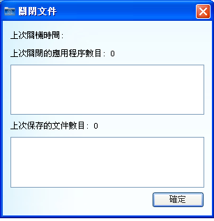

UPSmart使用手��
�P�]文件

�D1：�P�]文件
1. 上次�P�C�r�g
�@示系�y上次�P�]�r的系�y�r�g。
2. 上次�P�]的��用程序
�@示�P�]操作系�y�r，系�y正在�\行的��用程序。
3. 上次保存的文件
�@示�P�]系�y�r，��件�椭�保存的文件，保存文件的格式�c具�w系�y有�P，通常可以保存office文�n、txt等，文件保存的路�皆谠O置的�P�C�x��中�O置。
�]：��前�P�]的��用程序功能目前只�m��于一些系�y常用的��用��件，如Office、TXT等，部分��用��件�翰恢С衷��P�]功能。